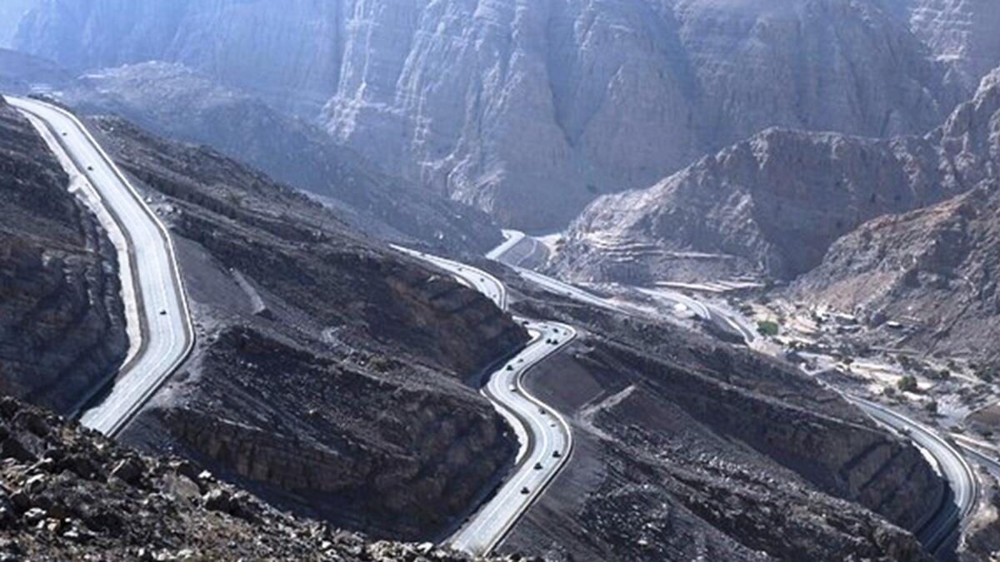
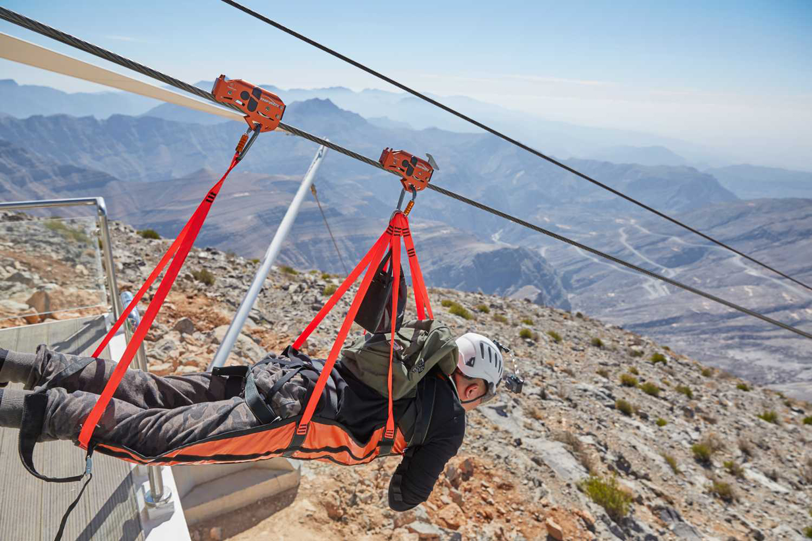
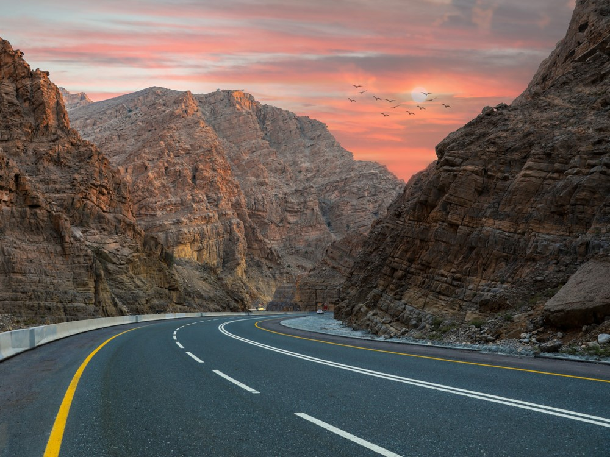

The Jebel Jais mountain peak is part of the spectacular cloud-piercing Hajar mountains.
The range extends from Ras Al Khaimah on the eastern side of the United Arab Emirates to the Musandam Peninsula on the northeastern side of Oman.
The Jebel Jais mountain peak in Ras Al Khaimah soars 1,934 metres above sea level.
Scientists believe that the Hajar mountains were formed by a continental collision near the
Arabian–Eurasian convergent plate boundary more than 70-million years ago.


